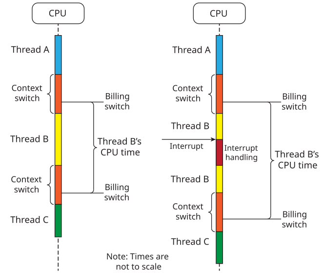

QNX OS includes some special CPU-time clocks that you can use to monitor the execution times for processes and threads.
This mechanism is implemented following the POSIX Execution Time Monitoring
option,
which defines special clock IDs that represent the execution time
(also called runtime) of a process or a thread:
| To obtain: | Call: | Specifying: | Classification |
|---|---|---|---|
| A process CPU-time clock ID | clock_getcpuclockid() | A process ID, or 0 to get the clock ID for the calling process | POSIX |
| A thread CPU-time clock ID | pthread_getcpuclockid() | A thread ID in the calling process | POSIX |
| Either of the above | ClockId() | A process ID and a thread ID | QNX OS |
A process has permission to get the CPU-time clock ID of any process. A thread can get the CPU-time clock ID of any other thread in the same process.
A thread updates its accumulated execution time (or runtime) when it stops running for any reason (i.e., preemption, yielding, or blocking). This accumulated time is returned if you call clock_gettime() or ClockTime() for any thread that is not currently running. If you call either of these functions for any thread that is running, its runtime is computed by taking the accumulated time and adding the time elapsed since the OS last put that thread into execution (i.e., the current system time minus the system time when the thread last started running).
If you query the runtime for a process, this runtime is computed by adding the runtimes of all past (terminated) threads and present threads, which are all those currently running and currently not running. The accumulated execution time of a thread is recorded when it's terminated, so it may be used in calculating the process's runtime on demand.
int process_clock_id, ret;
struct timespec process_time;
ret = clock_getcpuclockid (0, &process_clock_id);
if (ret != 0) {
perror ("clock_getcpuid()");
return (EXIT_FAILURE);
}
printf ("Process clock ID: %d\n", process_clock_id);
ret = clock_gettime (process_clock_id, &process_time);
if (ret != 0) {
perror ("clock_gettime()");
return (EXIT_FAILURE);
}
printf ("Process clock: %ld sec, %ld nsec\n", process_time.tv_sec,
process_time.tv_nsec);
int ret;
struct timespec process_time;
ret = clock_gettime (CLOCK_PROCESS_CPUTIME_ID, &process_time);
if (ret != 0) {
perror ("clock_gettime()");
return (EXIT_FAILURE);
}
printf ("Process clock: %ld sec, %ld nsec\n", process_time.tv_sec,
process_time.tv_nsec);
You can arrange to be notified when a process or a thread uses more than a given amount of CPU time. The setup procedure and the restrictions are similar for both cases.
Here is an example of setting up this type of notification for a thread, which involves creating a timer with a thread CPU-time clock ID as follows:
struct sigevent event;
timer_t timer_id;
struct itimerspec cpu_usage;
/* Set up the method of notification. */
SIGEV_SIGNAL_INIT( &event, SIGALRM );
signal( SIGALRM, sig_handler );
/* Create a timer. */
if ( timer_create( CLOCK_THREAD_CPUTIME_ID, &event, &timer_id ) ) {
perror( "timer_create" );
return EXIT_FAILURE;
}
/* Set up the amount of CPU time and then set the timer. */
cpu_usage.it_value.tv_sec = 0;
cpu_usage.it_value.tv_nsec = nsec;
cpu_usage.it_interval.tv_sec = 0;
cpu_usage.it_interval.tv_nsec = period_nsec;
if ( timer_settime( timer_id, 0, &cpu_usage, NULL ) ) {
perror( "timer_settime" );
exit(EXIT_FAILURE);
}
/* If the thread exceeds the specified CPU time, we'll get a SIGALRM,
and our sig_handler() function will be called. */
systeminterrupts such as the system timer tick.
